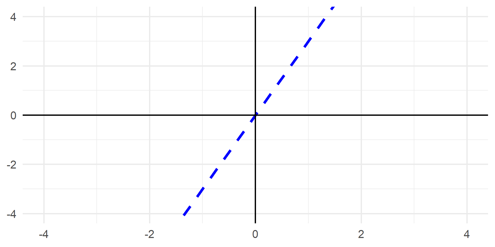
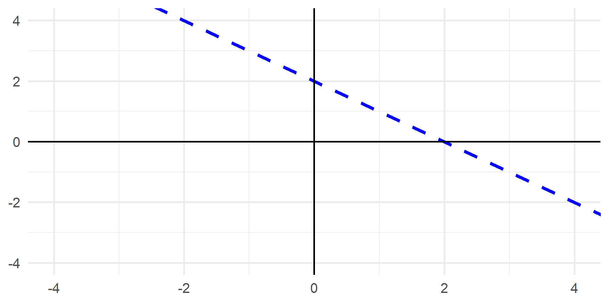
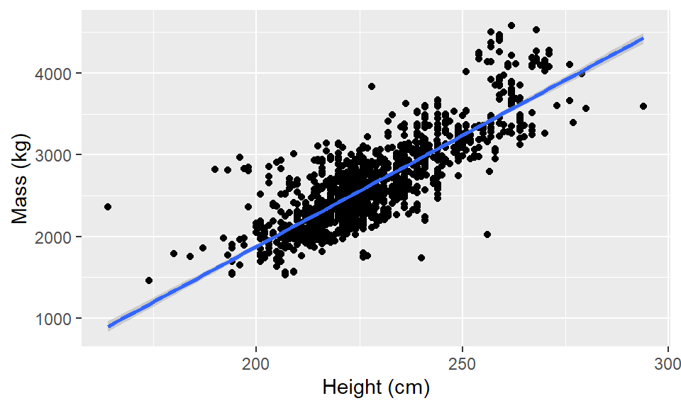
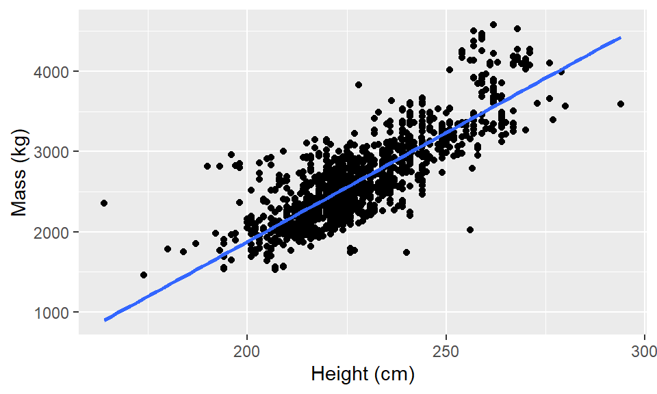
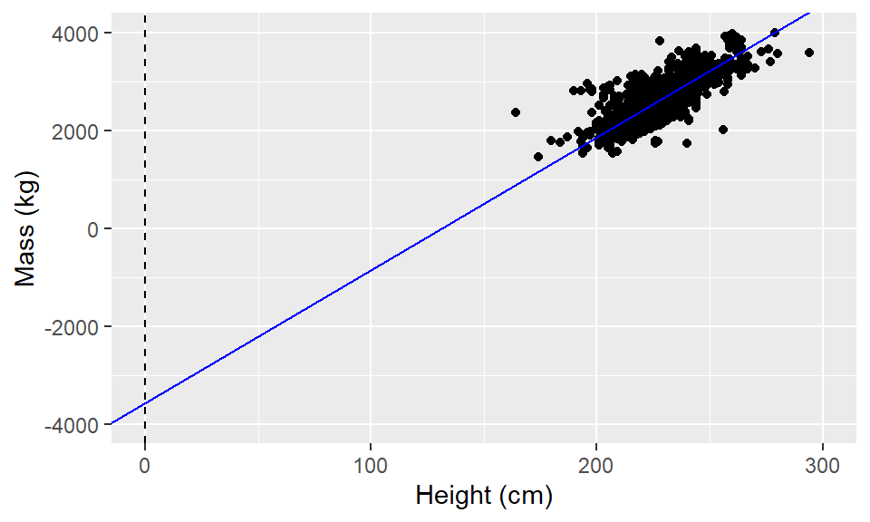
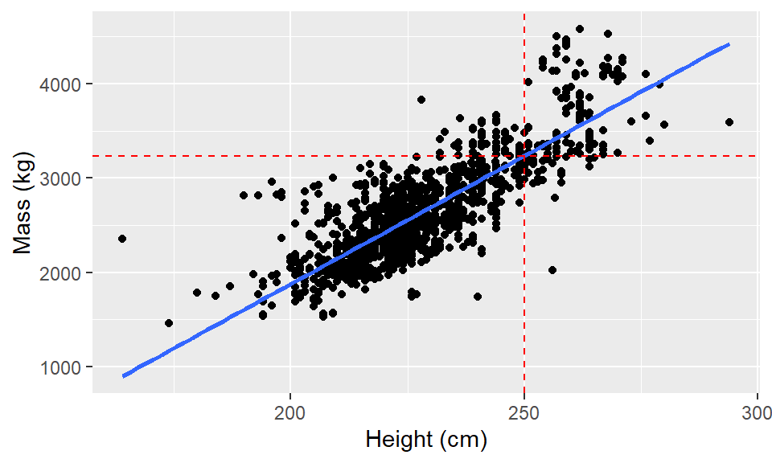
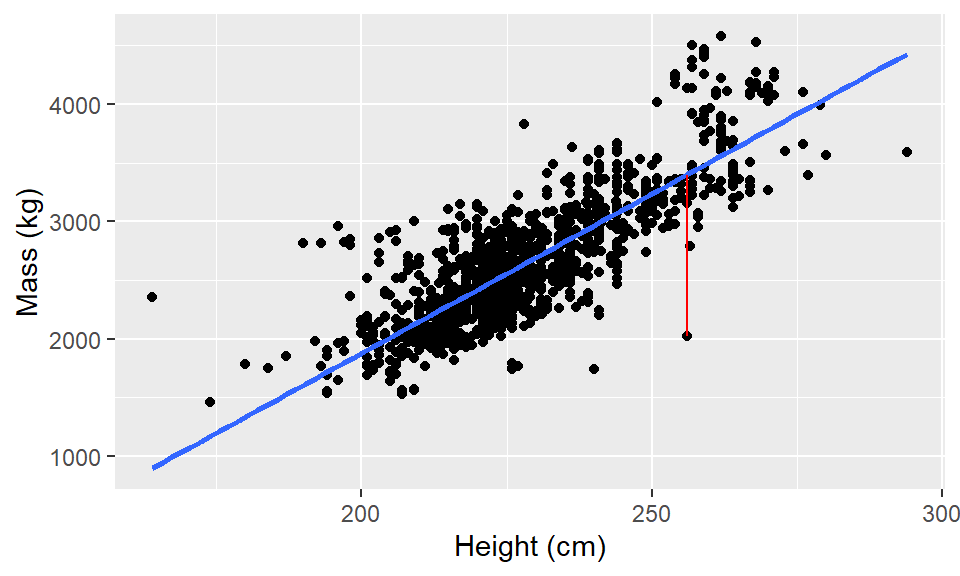
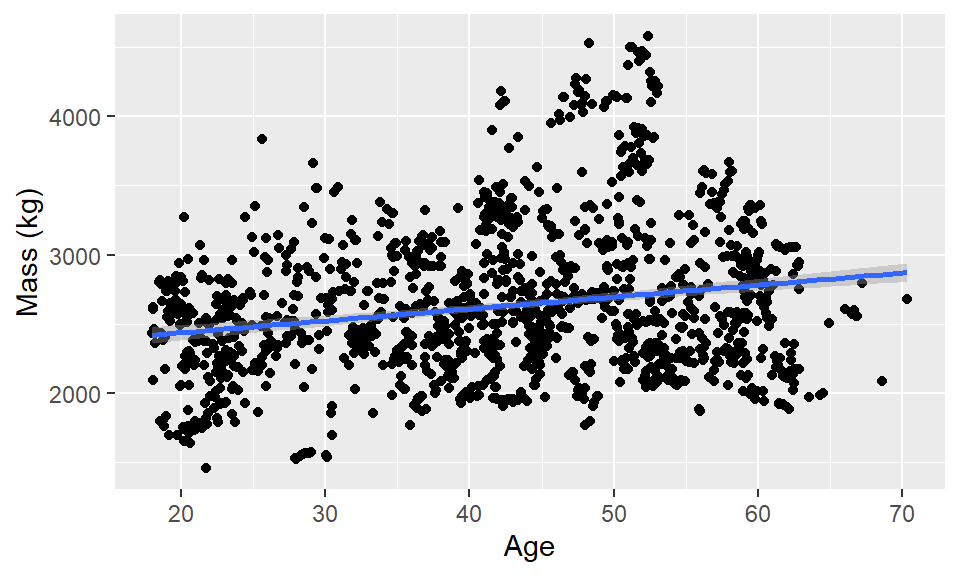

Data 308: Lecture 4a
Simple Linear Regression
CSUCI - Dr. Catalina Medina
Notation
We are all starting with different background, so let’s make sure we are on the same page with notation
Toy data
Suppose we had 5 observations of our response variable \(Y\): 2, 1, 2, 3, 4.
- \(Y_i\) = the \(i\)th \(Y\) value
- e.g., \(Y_5\) = 4, \(Y_2\) = 1
- \(\sum_{i = 1}^{n} Y_i = Y_1 + Y_2 + Y_3 + Y_4 + Y_5\)
- e.g., \(\sum_{i = 1}^{n} Y_i = 2 + 1 + 2 + 3 + 4 = 12\)
- \(\bar{Y} = \frac{1}{n} \sum_{i = 1}^{n} Y_i\)
- e.g., \(\bar{Y} = \frac{1}{5} \sum_{i=1}^{5} Y_i = 12/5\)
Practice with notation
Suppose our response variable was GPA and we have 6 observations: 4.0, 3.5, 3.0, 3.0, 2.5, 2.0
Q1: For this data identify:
- \(Y_3\) = ?
- \(\sum_{i = 1}^{n}Y_i\) = ?
- \(\bar{Y}\) = ?
- \(\sum_{i = 1}^{n} (Y_i - \bar{Y})^2\) = ?
Recall formula for a line
\[Y = mx + b\]
- \(m\) = slope
- \(b\) = \(y\)-intercept
Q2: Identify slope and \(y\)-intercept for these lines:

Idea of simple linear regression
Why simple linear regression?
Some of you may not have been exposed to it before and it is a good starting point for more complicated models.
It is very interpretable. If a model we can easily explain fits the data well, why use a more complicated less explainable model?
Example: Elephant Mass
Weighing elephants is not an easy task, but an elephant’s mass can help inform about appropriate diet and medicine for elephants in captivity.
Lalande et. al. 2022 figured height could be a useful proxy for elephants.
Example: Elephant Mass by height
The idea is to:
- Collect height and mass for a sample of elephants.
- Use that sample to fit a model, predicting mass from height.
- Predict the mass for elephants outside of our sample using their height in the model, with some understanding of uncertainty.
1. Collect sample
Rows: 1,470
Columns: 5
$ sex <chr> "B", "B", "B", "B", "B", "B", "B", "B", "B", "B", "B", "B", "B"…
$ age <dbl> 58.96235, 59.03901, 59.12389, 59.29090, 59.37303, 59.45791, 59.…
$ chest <dbl> 359, 359, 359, 361, 360, 359, 361, 357, 360, 364, 355, 355, 325…
$ height <dbl> 252, 252, 252, 253, 255, 254, 255, 256, 254, 255, 251, 257, 258…
$ mass <dbl> 3244, 3182, 3239, 3336, 3317, 3357, 3358, 3155, 3334, 3357, 324…2. Fit model (visually)

3. Predict an elephant’s mass from its height

For a new elephant with an unknown mass, if its height is 250 meters
- What would you predict its mass is?
- If you were wagering money on your prediction, how much would you wager?
Fitting simple linear regression
How can we fit our model to our data numerically?
How can we assess if it is a good fit?
All models are wrong, some are useful - George Box.
Our model: \(mx + b\)
For numeric/quantitative response variables \(Y\), we can model a linear relationship between \(Y\) and an explanatory variable \(X\)
\[Y \approx \beta_0 + \beta_1 X\]
In our sample we know both \(X\) and \(Y\), but \(\beta_0\) and \(\beta_1\) are unknown parameters/coefficients.
- \(\beta_0\) is the intercept
- \(\beta_1\) is the slope
Simple linear regression
Data = Model + Error
\[Y_i = (\beta_0 + \beta_1 X_i) + \epsilon_i\]
For linear regression we assume the expected value of our error is 0 (\(E[\epsilon_i] = 0\))
- This means sometimes our model will overestimate, sometimes it will underestimate, but in the long run we expect the errors to average out to zero
Theoretical versus fitted model
Theoretical Model: \[Y_i = \beta_0 + \beta_1 X_i + \epsilon_i\]
- In general, \(\beta_0\) & \(\beta_1\) are unknown parameters
- We will use our sample to get estimates (\(\hat{\beta}_0\) & \(\hat{\beta}_1\)) for the unknown parameters (\(\beta_0\) & \(\beta_1\))
Fitted model: \[\hat{Y}_i = \hat{\beta_0} + \hat{\beta_1} X_i\]
How should we calculate \(\hat{\beta_0}\) & \(\hat{\beta_1}\)?
Computing \(\hat{\beta}_0\) and \(\hat{\beta}_1\) in practice
Call:
lm(formula = mass ~ height, data = elephants)
Residuals:
Min 1Q Median 3Q Max
-1375.40 -193.73 -32.32 153.63 1457.10
Coefficients:
Estimate Std. Error t value Pr(>|t|)
(Intercept) -3553.9303 111.5451 -31.86 <2e-16 ***
height 27.1575 0.4885 55.59 <2e-16 ***
---
Signif. codes: 0 '***' 0.001 '**' 0.01 '*' 0.05 '.' 0.1 ' ' 1
Residual standard error: 305.3 on 1468 degrees of freedom
Multiple R-squared: 0.6779, Adjusted R-squared: 0.6777
F-statistic: 3090 on 1 and 1468 DF, p-value: < 2.2e-16Fitted model
General fitted model:
\(\hat{y_i} = \hat{\beta}_0 +\hat{\beta}_1 x_i\)
Our fitted model in context:
\(\hat{Mass_i} =\) -3553.93 + 27.16 \(Height_i\)


Interpreting y-intercept \(\beta_0\)
- General interpretation: The expected value of \(Y_i\) when \(X_i\) is zero.
- Interpretation in context: For elephants 0 meters tall we expect their mass to be -3553.93 kilograms.


The intercept doesn’t always have practical meaning in context!
Interpreting slope \(\beta_1\)
- General interpretation: The expected difference in the response for a 1 unit increase in \(X_i\).
- Interpretation in context: For elephants that differ in height by one meter we expect the taller elephants to have a mass27.16 kilograms more, on average.
Predicted / Expected mass
\(\hat{Mass_i} =\) -3553.93 + 27.16 \(Height_i\)
[1] 3236.07
For elephants 250 meters tall we expect their mass to be around 3236.07 kilograms.
OR
We predict 250 meter tall elephants to have a mass of 3236.07 kilograms, on average.
Various interpretations
There are many ways we can correctly interpret results. The three main aspects we want to be aware of is:
- conveying uncertainty (our estimates are not for sure the population values!)
- our estimates are about expectations, long-run averages
- results can imply an association, not causation, unless it is a randomized experiment
Reasoning behind Least Squares Regression
- Linear regression is often called least squares regression, but what does that mean?
- How is the computer getting values for \(\hat{\beta}_0\) and \(\hat{\beta}_1\)?
Residuals
Let \(e_i = y_i −\hat{y}_i\) represents the \(i\)th residual

Ideally we want the line with the least collective error right?
Minimizing the residual sum of squares
We will use the estimators that minimize the residual sum of squares, aka the least squares estimates
\[RSS = \sum_{i = 1}^{n} e_i^2 = \sum_{i = 1}^{n}(y_i - \hat{y_i})^2\]
- Why do you think we are choosing this as our function to optimize?
- What could have been another option?
Minimizing the residual sum of squares
\[RSS = \sum_{i = 1}^{n} e_i^2 = \sum_{i = 1}^{n}(y_i - \hat{y_i})^2.\]
Through some calculus we can show that the least squares estimators are
\[\hat{\beta}_1 = \frac{\sum_{i = 1}^{n} (x_i - \bar{x})(y_i - \bar{y})}{\sum_{i = 1}^{n} (x_i - \bar{x})^2}\]
\[\hat{\beta}_0 = \bar{y} - \hat{\beta}_1 \bar{x}\]
Do I expect you to have these formulas memorized?
No, but I do expect you to know the residual sum of squares formula and that \(\hat{\beta_0}\) and \(\hat{\beta_1}\) minimize it.
Now you try!

Call:
lm(formula = mass ~ age, data = elephants)
Residuals:
Min 1Q Median 3Q Max
-994.26 -372.14 -64.44 267.67 1865.28
Coefficients:
Estimate Std. Error t value Pr(>|t|)
(Intercept) 2264.678 48.213 46.972 < 2e-16 ***
age 8.629 1.089 7.926 4.44e-15 ***
---
Signif. codes: 0 '***' 0.001 '**' 0.01 '*' 0.05 '.' 0.1 ' ' 1
Residual standard error: 526.9 on 1468 degrees of freedom
Multiple R-squared: 0.04104, Adjusted R-squared: 0.04038
F-statistic: 62.82 on 1 and 1468 DF, p-value: 4.442e-15Q3: Identify and interpret the estimated intercept in context.
Q4: Identify and interpret the estimated slope in context.
Q5: What mass would we predict, on average, for an elephant 30 years of age?.
Q6: What mass would we predict, on average, for an elephant 6 years of age?.